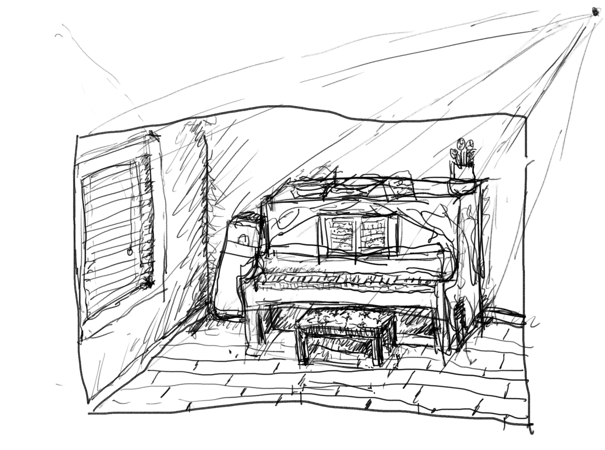

Westleigh, 2021
It doesn't really look like this anymore as there's stuff on the piano now but I used to play 2 hours everyday in year 11. I thought I was genuinely pursuing a career in piano playing but eventually my parents stopped my lessons after passing the AMusA exams. To my surprise it become a genuine passion as I would go through old manuscripts of Bach's work, deciphering his artistic intent and researching the authentic way to perform these pieces. I told myself I would get rich and retire and learn both Well-Tempered Clavier books before I turned 50...
Finding time to play piano nowadays is so difficult as I always get home so late (literally illegal to play loud sounds after 9pm). I still listen to alot of classical pieces though, Bach has been my top artist on Spotify wrapped for 3 years now :)